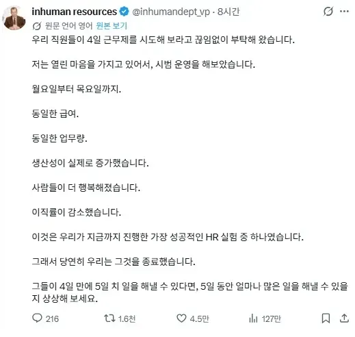

닉이 inhuman resources ㅋㅋㅋㅋㅋㅋㅋ
"사람 아니야! 인사팀" ㅋㅋㅋㅋㅋㅋㅋㅋㅋㅋㅋ
4일 일하는데 급여가 같으면 결과적으로 시급이 오른건가?
AI 발전에도 궁극적으로 인간고용은 계속될 거라 믿는 이유
빡대가린가.. 기존이 5일인데 도로아미타불 된다고 생산성이 늘리가 있나 ㅋㅋ
그걸 비판하는 블랙유머자나..
human resources =인사과
inhuman(e) resources =비인(간적)사과
걍 블랙기업 컨셉인 유머계정임
그러쿤.. 그런 영어쪽은 잘 몰랐음 ㄷ 사실 계정명은 눈에 들어오지도 않았지만..
내가 주4일 일함... 그래서 어디 이직할곳이 없음 ㅋㅋ

4일동안 5일치 일이 되면 5일동안은 10일치 일을 줘도 된다는거잖아?